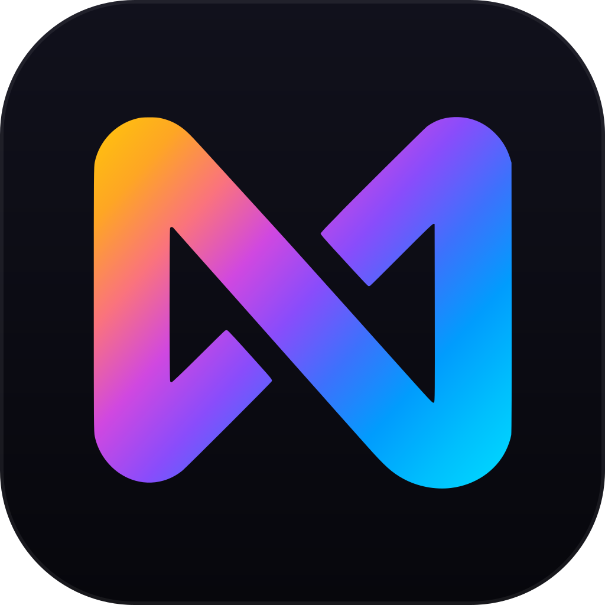

Libraries
One tile per library with your own names and emoji, plus an episode count for TV sections. Unconfigured libraries follow in the order the server reports them.

MediaWatch v__VERSION__One message in one channel, edited every minute: who is watching what, how far along, in which quality. Library totals, server state and your download queue beside it.
Try the demo: press a stream button in the channel.
MediaWatch posts the dashboard once and keeps editing that same message, so the channel never fills up. A restart picks the message up again instead of posting a second one.
One tile per library with your own names and emoji, plus an episode count for TV sections. Unconfigured libraries follow in the order the server reports them.
Title, user, a ten-cell progress bar, direct play or transcode, quality, bitrate and player. Paused streams show a pause sign instead of the bar.
The SABnzbd queue while it runs: progress, time left, speed and what is still to fetch, then the queue total and your disk space. With an empty queue the block is gone.
When the server stops answering for five minutes, the dashboard turns red and says since when, with the Uptime Kuma history for the last day, week and month.
A button per stream opens the details as a reply only the person who clicked can see: player, connection, resolution and HDR, file, subtitles, and the full transcode chain when the server converts.
Each deployment watches exactly one server, chosen by media_server.type. Both render the same dashboard; Plex goes further when Tautulli sits beside it.
| Capability | Plex | Jellyfin |
|---|---|---|
| Live dashboard and library totals | Yes | Yes |
| Stream details | With Tautulli | Yes |
| Kill Stream | Yes | Yes |
| SABnzbd and Uptime Kuma | Yes | Yes |
| User and global statistics | With Tautulli | No |
| Open in the media server | With Tautulli | No |
Docker is the recommended way. You need a Discord bot token, a channel, your server ID, at least one authorized user, and a Plex token or a Jellyfin API key.
A Discord application with one privileged intent and five permissions, invited to your server.
Discord bot guideSecrets go into .env, behaviour into data/config.yaml. Set media_server.type and you have a dashboard.
The image is on GHCR. State lives in ./data: no database, no Redis.
services: mediawatch: image: ghcr.io/nichtlegacy/mediawatch:latest container_name: mediawatch restart: unless-stopped env_file: - .env environment: RUNNING_IN_DOCKER: "true" volumes: - ./data:/app/data
Every option with its default, every log message verbatim, and what to do when the dashboard does not look like this one.
Open the documentationEveryone who can read the channel sees the dashboard and, by default, may open stream details, user statistics and global statistics. Three options restrict the buttons to authorized users; channel permissions decide who sees the message. Privacy and visibility
Docker or Python 3.12, a Discord server you administrate, and a Plex or Jellyfin server the bot can reach by IP or hostname. Tautulli, SABnzbd and Uptime Kuma are optional.
MediaWatch is PlexWatch 2.0. Your config.json is converted on the first start and the old file stays untouched. The image path changed and DISCORD_GUILD_ID is now required. Upgrading from 1.x
Not a web app, not a multi-user control panel, not a replacement for Tautulli or Uptime Kuma. It is an operational bot for people who already live in Discord.
With extensive help from AI coding assistants. PlexWatch 1.x started that way too; it worked, but its internals were not built to last, and the 2.0 rewrite fixes that.
On my own server, since early 2026. The features and fixes come from using it every day, and CI runs the full test suite on every push and pull request.